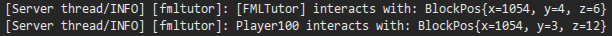

FakePlayer是什么
FakePlayer是很多模组都使用了的一个Forge提供的机制，如果读者有过使用一些使用了FakePlayer机制的方块、物品、实体等的经验，比如BuildCraft模组中的采石场和机器人，就会注意到，它们的整个行为都是模仿玩家的，例如方块被破坏时会出现裂痕，总的说来，Forge提供的FakePlayer，主要就是为了模拟一个世界中的玩家，一般说来，FakePlayer一共有如下这么几个特征：
- 只会在服务端生成
- 坐标永远是（0，0，0）
- 不能够使用命令，也不能够发聊天消息
- 不能够获得成就
- 不能受到伤害，也不能伤害玩家
- 不会死亡，自身不会更新，不会被传送到其他维度的世界
使用FakePlayer有下面的优点：
- 逼真，如上方提到的BuildCraft模组中的采石场和机器人的挖掘效果
- 方便管理，在服务器中设置FakePlayer的权限，就可以方便管理模组的部分行为
生成一个FakePlayer
我们在包com.github.ustc_zzzz.fmltutor.entity下新建一个文件FakePlayerLoader.java：
src/main/java/com/github/ustc_zzzz/fmltutor/entity/FakePlayerLoader.java:
package com.github.ustc_zzzz.fmltutor.entity;
import java.lang.ref.WeakReference;
import java.util.UUID;
import com.mojang.authlib.GameProfile;
import net.minecraft.entity.player.EntityPlayerMP;
import net.minecraft.world.WorldServer;
import net.minecraftforge.common.util.FakePlayerFactory;
public class FakePlayerLoader
{
private static GameProfile gameProfile;
private static WeakReference<EntityPlayerMP> fakePlayer;
public FakePlayerLoader()
{
gameProfile = new GameProfile(UUID.fromString("C3F2EF82-E759-53EA-9D69-0D6E394A00B8"), "[FMLTutor]");
fakePlayer = new WeakReference<EntityPlayerMP>(null);
}
public static WeakReference<EntityPlayerMP> getFakePlayer(WorldServer server)
{
if (fakePlayer.get() == null)
{
fakePlayer = new WeakReference<EntityPlayerMP>(FakePlayerFactory.get(server, gameProfile));
}
else
{
fakePlayer.get().worldObj = server;
}
return fakePlayer;
}
}
然后我们在init阶段注册它：
src/main/java/com/github/ustc_zzzz/fmltutor/common/CommonProxy.java（部分）:
public void init(FMLInitializationEvent event)
{
new CraftingLoader();
new EnchantmentLoader();
new AchievementLoader();
new EventLoader();
new WorldGeneratorLoader();
new FakePlayerLoader();
}
首先，我们需要一个GameProfile类的实例，这个实例提供一个玩家的UUID和一个玩家名称，玩家名称约定使用中括号括起来，这里就是[FMLTutor]，然后我们只需要随机生成一个UUID就可以了，这里作者本人随机生成了一个，不要使你的UUID和任何一个你看到的UUID相同，包括作者在示例里提供的这个UUID，请自行随机生成一个，完全使用随机数发生器生成甚至都是可以接受的。因为UUID的数量比宇宙中的原子数量都要多，所以两个随机生成的UUID完全相同的概率极低。
现在我们把目标转移到下面的那个WeakReference上来，我们使用WeakReference来包装获取到的FakePlayer，那么这个WeakReference的意义何在呢？
WeakReference类是Java提供的一种描述对象引用方式的包装，它保证当前被包装的对象是弱引用的，也就是说如果这个对象没有其他的引用，那么它就可以被Java的垃圾回收机制加以回收。WeakReference类提供一个名为get的方法，以获取被包装的对象，不过因为这个对象可能已经被Java的垃圾回收机制回收了，所以可能返回的是null。
那么为什么我们要放任Java的垃圾回收机制对我们想要获取的FakePlayer进行回收而不管呢？这是因为当世界关闭的时候，我们不应该允许任何形式的玩家类的实例（EntityPlayerMP的子类）出现在服务端，包括这里的FakePlayer。Minecraft Forge在服务端的世界加载时，会通过引用所有获取到的FakePlayer的方式保证FakePlayer不会被回收，但在服务端的世界关闭的时候，我们就需要Java的垃圾回收机制对这些FakePlayer进行回收了。
然后我们就可以使用FakePlayerFactory获取FakePlayer了。
使用FakePlayer
使用FakePlayer其实没啥好说的，只需要注意只在服务端使用就可以了，实体的AI更新只在服务端进行，这里我们作为示例，让黄金鸡可以以FakePlayer的方式在脚下放置方块：
src/main/java/com/github/ustc_zzzz/fmltutor/entity/EntityGoldenChicken.java（部分）:
@Override
public void updateTask()
{
BlockPos entityPos = new BlockPos(entity);
if (entity.worldObj.isAirBlock(entityPos.up()))
{
AxisAlignedBB aabb = AxisAlignedBB.fromBounds(entityPos.getX() - 1, entityPos.getY(),
entityPos.getZ() - 1, entityPos.getX() + 2, entityPos.getY() + 1, entityPos.getZ() + 2);
for (Object e : entity.worldObj.getEntitiesWithinAABB(EntityItem.class, aabb))
{
ItemStack stack = ((EntityItem) e).getEntityItem().copy();
Block block = Block.getBlockFromItem(stack.getItem());
if (block != null)
{
entity.setLocationAndAngles(entity.posX, entity.posY + 1, entity.posZ, entity.rotationYaw,
entity.rotationPitch);
EntityPlayerMP player = FakePlayerLoader.getFakePlayer((WorldServer) entity.worldObj).get();
player.theItemInWorldManager.activateBlockOrUseItem(player, entity.worldObj, stack, entityPos,
EnumFacing.DOWN, 0.0F, 0.0F, 0.0F);
if (stack.stackSize <= 0)
{
((EntityItem) e).setDead();
}
else
{
((EntityItem) e).setEntityItemStack(stack);
}
}
}
}
}
我们这里调用activateBlockOrUseItem方法，假设一个FakePlayer放置了这个方块。
打开游戏测试后，调试信息显示出了FakePlayer的操作：

下面的是玩家的操作，上面的是FakePlayer的操作。